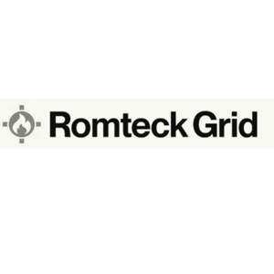

Trade Mark Journal No.2025/048 28 November 2025
UK00004237295 21 July 2025 (9,16,35,37,38,41,42,45)
Mark 1

Mark 2
- Class 9
- Fire alarm apparatus and instruments; fire detection and signalling equipment; smoke and heat detectors; alarm systems incorporating control and visual display apparatus; cellular modems; LTE and 4G routers for alarm transmission; downloadable software for monitoring and reporting fire incidents; computer hardware and mobile applications for fire alarm control and notification; Computer hardware; computer software; Internet of Things (IoT) devices, sensors and connectivity apparatus; downloadable digital technology for data transmission, monitoring and control; E lectrical and electronic alarm communication devices; downloadable software for monitoring, managing, and controlling alarm systems; downloadable mobile applications for controlling alarm outputs and receiving alerts; fire alarms; smoke detectors; IoT devices and sensors for building, industrial, and workplace safety; SIM cards and embedded connectivity modules; computer hardware and software for security and safety monitoring; wearable devices and smart badges for use in workplace safety; downloadable cloud-based software for use in alarm response and data management; apparatus for transmission of data; telecommunications apparatus for use in security and safety systems.
- Class 16
- Printed materials and manuals for fire alarm installation and operation.
- Class 35
- Data compilation and analysis services relating to fire system performance and alarm statistics; Business data analytics; business management and consultancy services relating to procurement; data analysis services relating to security and safety performance; compilation and systemisation of information into computer databases; business consultancy relating to workplace safety systems and alarm monitoring; business support services for security operations; commercial management of device connectivity services; subscription management and billing services for SaaS and connectivity plans; data management services.
- Class 37
- Installation and repair of fire alarm systems; maintenance and servicing of fire alarms and detection systems.
- Class 38
- Transmission of fire alerts and signals; communication services for fire detection systems; wireless transmission of fire alarm data; Telecommunications services, namely, communications and connectivity services for the transmission of data, voice, and video over networks; Telecommunications services; transmission of alarm signals, data and video over global communication networks; secure messaging services for alarm and safety systems; data communication services for IoT devices; provision of access to remote monitoring platforms; mobile and wireless communications services relating to security and fire alarm systems; leasing of telecommunications lines for connectivity services. .
- Class 41
- Training services in the fields of security, alarm monitoring, and workplace safety; education services relating to the configuration, use and management of alarm systems and IoT devices; certification of technicians and operators of alarm and safety systems; publication of instructional materials in electronic form; provision of non-downloadable webinars, workshops and courses in relation to alarm connectivity software and systems.
- Class 42
- SaaS for configuring and monitoring fire detection systems; software services for integrating fire alert data into emergency response systems; remote diagnostics; SaaS; Software as a service [SAAS] featuring cloud-based software platforms for diagnostics, analytics and cloud-based software; Sof tware as a Service (SaaS) featuring software for use in configuring, diagnosing, managing and monitoring alarm and safety devices; provision of online non-downloadable software for use in controlling and analysing data from IoT and alarm systems; cloud computing services; development and maintenance of software for alarm monitoring and control; platform as a service (PaaS) for managing connectivity services; encryption services; providing virtual infrastructure for monitoring industrial and workplace safety; technical support services in connection with alarm connectivity software; software customisation and remote diagnostics for alarm communication devices; Provision of online platforms for business data monitoring and analytics; provision of online business information platforms.
- Class 45
- Remote monitoring of fire alarm systems; emergency incident response coordination services; rental of fire alarms; provision of information relating to the operation of alarms; Security and fire monitoring; control room services; Monitoring of security and fire alarm systems; remote monitoring of electronic devices for security and safety purposes; emergency response monitoring services; control room services for surveillance and alarm response; monitoring of alerts and automated notifications for use in industrial and commercial environments; security services for the protection of property and individuals through the use of alarm and sensor systems; surveillance services via remote platforms. .
RDCCO Pty LTD
Representative: Josh-IP.Law